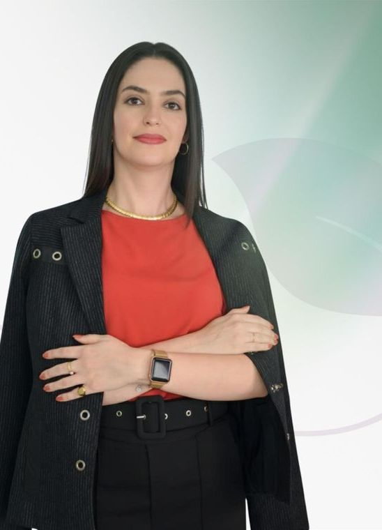
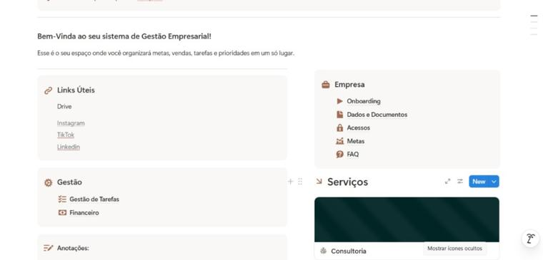
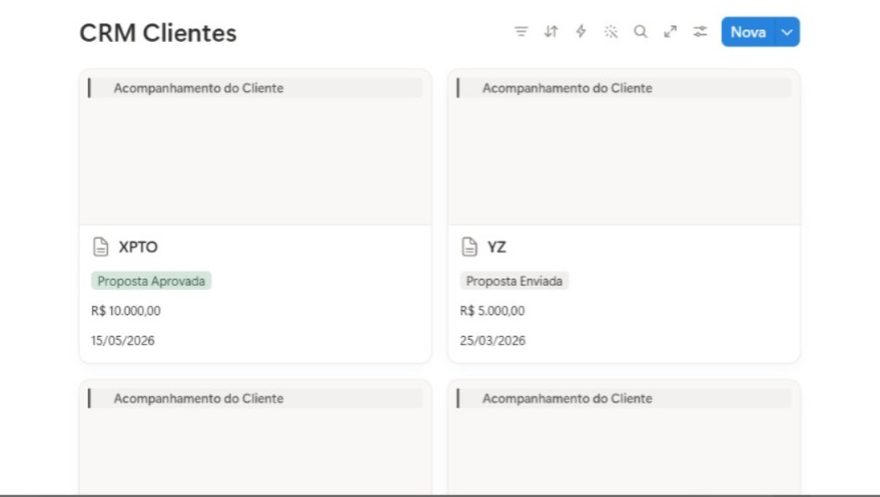
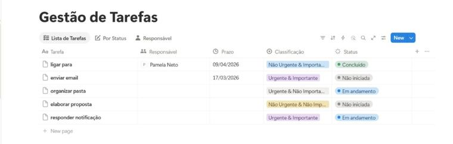
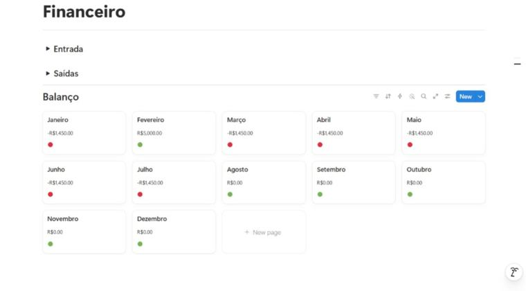
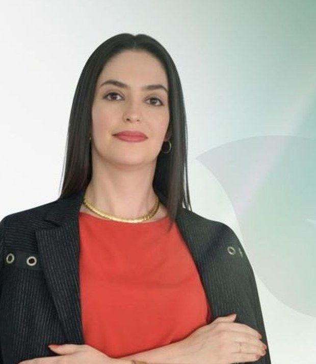

Você executa, não só entende
Aprende o passo a passo real: portal, documentação, protocolo, acompanhamento e resposta a exigências.
Mentoria individual e ao vivo para profissionais da área ambiental que querem executar, com segurança, os três serviços que o mercado mais contrata: Serviços do IBAMA, Gestão de Resíduos e Licenciamento Ambiental.
Quero participar da mentoriaO acesso é por aplicação. Você preenche o formulário e eu avalio pessoalmente se a mentoria faz sentido para o seu momento profissional.

A faculdade ensina legislação, conceito e teoria. Mas ninguém mostra como abrir o portal do órgão, montar a documentação, protocolar um processo e responder a uma exigência técnica com o nome da sua responsabilidade em cima.
É por isso que tantos profissionais competentes travam na hora de executar.
A Mentoria Master é um acompanhamento individual de 4 meses, ao vivo, em que você aprende a executar os principais serviços técnicos da área ambiental do jeito que eles acontecem na prática.
Não é um curso gravado com conteúdo genérico. Cada encontro é conduzido a partir do seu momento profissional, das suas dúvidas e da realidade do estado e do município onde você atua ou pretende atuar.
Aprende o passo a passo real: portal, documentação, protocolo, acompanhamento e resposta a exigências.
Recebe modelos de documentos, checklists e planilhas prontos para usar nos seus serviços.
Aprende a prospectar, precificar e apresentar proposta, e não apenas a parte técnica.
Suporte direto comigo pelo WhatsApp durante toda a mentoria, para as dúvidas que aparecem no meio do processo.
E precisa dominar um serviço específico para crescer dentro da empresa onde já trabalha.
E quer ampliar a atuação para novos serviços, com mais segurança técnica.
E precisa de um processo técnico e comercial organizado para começar.
E quer sair da insegurança do início de carreira sem passar anos no tentativa e erro.
E quer aprender a executar de verdade, e não apenas acumular certificados.
Contemplamos profissionais de Engenharia Ambiental, Engenharia Sanitária, Engenharia Florestal, Gestão Ambiental, Tecnologia Ambiental, Biologia, Geografia, Química e áreas correlatas.
Estes são os três serviços que sustentam a rotina de um profissional ambiental, seja dentro de uma empresa, seja atuando por conta própria. São também os três que você vai aprender a executar na prática.
Cadastro Técnico Federal (CTF/APP), Certificado de Regularidade (CR), gestão das Taxas de Controle e Fiscalização Ambiental (TCFA) e elaboração do RAPP, o Relatório Anual de Atividades.
Elaboração e gerenciamento de PGRS, PGRSS e PGRCC, além da utilização dos sistemas SIGOR, SINIR e MTR na prática do dia a dia.
Processos municipais e estaduais do começo ao fim: acesso aos portais, elaboração da documentação, protocolo e acompanhamento até a resposta do órgão.
O P.A.V.A. é a metodologia que desenvolvi exclusivamente para a Mentoria Master, a partir da experiência prática de mercado. Ele existe porque conhecimento técnico sozinho não sustenta uma carreira: é preciso saber se posicionar, gerar oportunidades, executar com qualidade e crescer com consistência.
Você aprende a se enxergar como profissional estratégico, entendendo seu papel no mercado e como se destacar, seja na empresa onde trabalha ou atuando como consultor.
Você desenvolve a habilidade de identificar e gerar oportunidades: novos clientes, demandas internas, projetos e possibilidades de crescimento profissional.
Não basta saber, é preciso saber aplicar. Aqui você aprende a executar, na prática, os principais serviços e demandas ambientais com segurança e qualidade.
Você constrói uma trajetória mais sólida: crescimento na carreira, melhor posicionamento e mais valorização dentro do mercado ambiental.
A metodologia respeita as legislações, sistemas, normas e procedimentos específicos de cada estado e município, porque um método que ignora a realidade do seu órgão ambiental não serve para nada.
Antes do primeiro encontro, você recebe um plano de ação estratégico montado a partir do seu momento profissional e dos seus objetivos.
Encontros ao vivo, práticos e direcionados, com base em situações reais do mercado ambiental.
Você aplica o que aprendeu com acompanhamento próximo, tirando dúvidas conforme os processos avançam.
Um mês inteiro além do conteúdo técnico, com dois encontros:
Um sistema completo para organizar a sua rotina ambiental, pronto para usar desde o primeiro dia:
Junto com o sistema, você recebe uma aula autoexplicativa com uma especialista em processos organizacionais ambientais, ensinando na prática como utilizar a ferramenta.




A maior parte dos profissionais técnicos perde tempo e dinheiro por desorganização, não por falta de conhecimento. O Escritório Digital resolve isso.
Todo o material que uso na minha rotina fica disponível para você, organizado em uma pasta exclusiva no Google Drive:
Todos os modelos são editáveis, de acesso vitalício e podem ser usados nos seus serviços reais, com os seus clientes.

Sou Pamela Neto, Engenheira Ambiental e Sanitarista, registrada no CREA/SP sob o número 5070315688, com especialização em Licenciamento Ambiental e mais de 10 anos de atuação na área ambiental.
Sou fundadora da Pamela Neto Consultoria Ambiental, onde conduzo processos de licenciamento municipal e estadual, gestão e regularização de resíduos, atendimento a exigências de órgãos ambientais e elaboração de estudos e documentos técnicos.
Ao longo desses anos, atuei em projetos para empreendimentos privados, administração pública municipal e organizações do setor agroambiental, entre eles o Condomínio Quinta da Baroneza, a Prefeitura de Itatiba e a empresa Agroambiental.
Criei a Mentoria Master porque vi muitos profissionais capazes travarem na hora de executar, exatamente como eu travei no começo. O que eu ensino aqui não vem de teoria: vem da rotina real da minha consultoria, dos processos que eu conduzo e dos erros que já cometi e aprendi a evitar.
“Seja a mudança que você quer ver no mundo.”
Uma mentoria nos ajuda a reencontrar o caminho, quando tudo parece perdido. A mentoria me ajudou a me sentir mais confiante. Percebi que aprendi de verdade e que agora eu consigo lidar com as demandas relacionadas ao IBAMA, sabendo exatamente o que preciso fazer.
A aula prática sobre PGRS da Pamela foi incrível. Ela tem uma didática excelente e, em poucas horas, conseguiu ensinar toda a estrutura necessária para elaborar um PGRS do zero. Tenho certeza de que vou utilizar muito os modelos de documentos no meu dia a dia da consultoria.
Antes, estava insegura, com muitas dúvidas. Depois da consultoria me sinto uma profissional bem mais preparada, pois todas as dúvidas foram sanadas com muito cuidado e responsabilidade profissional. A Pâmela tem muito conhecimento e paixão pelo que faz.
A Mentoria Master é individual, então nem todo perfil é aderente. Por isso o acesso acontece por aplicação, e o processo é simples:
Você preenche o formulário. São algumas perguntas sobre a sua formação, o seu momento profissional e os seus objetivos.
Eu analiso pessoalmente a sua aplicação, para entender se a mentoria realmente faz sentido para você agora.
Se o seu perfil for aderente, minha equipe entra em contato pelo WhatsApp para agendar uma call de diagnóstico.
Na call, conversamos sobre o seu momento, eu apresento a mentoria em detalhes e você decide com calma.
Se você entrar e sentir que a mentoria não é para você, tem 7 dias para desistir e receber o valor integral de volta. Está previsto em contrato.
A Mentoria Master é 100% individual. Todos os encontros são só entre você e eu, com o conteúdo direcionado ao seu momento profissional.
Sim, todos os encontros são ao vivo e gravados. Você recebe os links depois de cada aula e pode rever quantas vezes quiser.
Cerca de 4 horas por semana, somando o encontro ao vivo e a aplicação prática do que foi trabalhado.
Não. A mentoria atende tanto quem já atua quanto quem está começando agora e quer aprender a executar com segurança.
Faz sim, desde que você atue na área ambiental dentro da empresa. Muitos alunos usam a mentoria para dominar um serviço específico e crescer onde já trabalham.
Sim. A Mentoria Master pode ser aplicada em qualquer estado do Brasil, porque todo o material e todas as aulas são personalizados de acordo com as legislações, sistemas e procedimentos do seu estado.
Os encontros são semanais, com duração de 1h30 a 2h, e os horários são combinados diretamente com você. Como a mentoria é individual, a agenda é montada em conjunto.
Sim. Todos os modelos são editáveis, de acesso vitalício e feitos justamente para serem aplicados no seu dia a dia, com os seus clientes.
Não. Depois do envio, a sua aplicação passa por uma avaliação. Se o seu perfil estiver alinhado com a mentoria, você é convidado para uma call de diagnóstico. Caso não esteja, minha equipe entra em contato para avisar.
A Mentoria Master é um espaço de troca, aprendizado e direcionamento, pensado para profissionais ambientais que querem evoluir com mais segurança, clareza e estratégia. Se você sente que precisa de apoio para dar o próximo passo na sua trajetória, preencha o formulário. Levo poucos minutos analisando cada aplicação e respondo todas.
Leva menos de 5 minutos para preencher. Garantia de 7 dias após a entrada na mentoria.
Responda com sinceridade: quanto mais eu entender o seu momento, mais precisa será a minha avaliação. Leva menos de 5 minutos.
Etapa 1 de 7
Obrigada por responder. Agora é só ficar de olho no seu WhatsApp.
Minha equipe vai analisar as suas respostas e, caso o seu perfil esteja alinhado com a Mentoria Master, entraremos em contato para dar continuidade à sua aplicação.
Até breve!